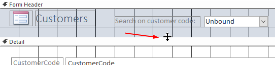
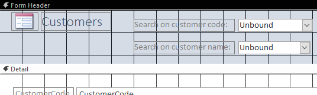
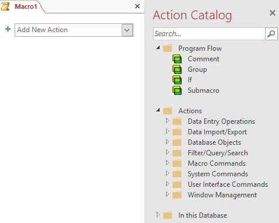
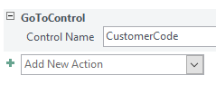
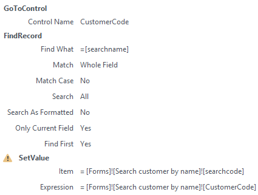

Searching a record with two combo boxes on a form.
To perform this task it is necessary that you have finished Task: Customer search by code where you created the form
Search customer by code that you will need in this
task.
There should be a form created with the data of a customer and with two combo boxes.
Through the first list a customer should be searched by the customer code and
through the second list by name. The second combo box should displayed a sorted list
of last names followed by first names. After making a choice through either list the
data of the customer in the form should be shown.
ANALYSIS
The basis of the new form is the previously created form Search customer
by code. In Access you can create a copy of an object and save it
under a different name. On this you create the second combo box. And you need to
create a macro that will execute the actions. First go to the drop-down list box to
get the entered customer code and then find the corresponding record.
Open database candy2016.accdb.
Right click on form Search customer by code, choose
Copy. Then right click again and choose
Past.
Name the new form Search customer by name and open this
form in Design View.
Create more space for the form header. Position the mouse pointer over the top
edge of Detail until it change as shown in the following illustration. Then
press the left mouse button and drag the border down so that there is enough
space for the second combo box.
Figure 1. Enlarging form header

Create a second Combo Box below the first one.
Answer the consecutive questions of the Wizard as follows:
The combo box should get the values from a table or a query.
Table: Customers should provide the values for the combo box.
Add in sequence the fields LastName, FirstName, CustomerCode.
Sort records ascending on LastName and then FirstName.
Accept the default width of the column and select to hide the key column
(this is CustomerCode).
Remember the selected value for later use.
Label text: Search on customer name:
After completing the wizard you are back in the Design View.
Take care that labels and combo boxes are properly aligned.
Figure 2. Form with 2 combo boxes

Select second combo box and change in the Property Sheet (tab
Other) the name in searchname. Click on
the selection arrow in box After Update and type
Search customer by name.
Note: This macro does not exist yet and will be created in the next
step.
Close the form and save the changes.
Choose tab Create > Macro (group Macros & Code).
Figure 3. Macro window

Click on the selection arrow in the box Add New Action
and select action GoToControl from the list
Enter CustomerCode in box Control
Name.
Figure 4. Action GoToControl CustomerCode

Click on the selection arrow in the box Add New Action
and select action FindRecord.
Enter value =[searchname] in box Find
What in . The other arguments are already filled in by Access
with their default values and can remain.
To ensure that the value of the first list box also changes to the right
value when choosing a name, you had to create an action for this. The value for
searchcode must be equal to the value of CustomerCode of the found
record.
Add an action with the name Setvalue. This action considers
Access as a dangerous action which is not shown by default. It should be made
visible in the list by using the setting Show All Actions (group Show/Hide). This action has two parameters, Item and
Expression, which should get the following values:
Item: [Form]![Search customer by
name]![searchcode]
Expression: [Form]![Search customer by
name]![CustomerCode]
Figure 5. Macro customer by name

Close the macro window and save it with name Search customer by
name.
Open form Search customer by name and test the operation
of both combo boxes.
Attention: When the first list box is used, its name does not appear
in the second list box. To achieve this, you also need to add an action
SetValue to this macro. But that has consequences for
the operation of the combo box on form Search customer by
code.